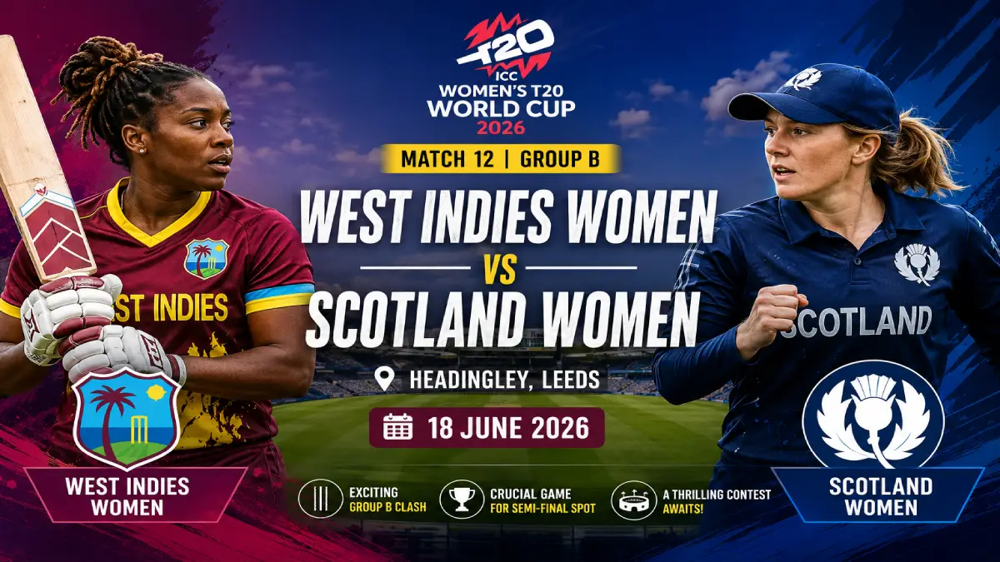

West Indies Women vs Scotland Women Match Preview – ICC Women's T20 World Cup 2026

The ICC Women's T20 World Cup 2026 continues with an exciting Group B clash as West Indies Women face Scotland Women at Headingley, Leeds. Both teams have started their campaigns positively and will look to strengthen their semifinal hopes with another important victory.
Match Details
| Match | West Indies Women vs Scotland Women |
|---|---|
| Tournament | ICC Women's T20 World Cup 2026 |
| Venue | Headingley, Leeds |
| Date | 18 June 2026 |
| Group | Group B |
Match Preview
West Indies Women made an impressive start to their campaign by defeating defending champions New Zealand. Their batting unit displayed composure under pressure and successfully chased a challenging target.
Scotland Women also enter the match with confidence after recording their first-ever Women's T20 World Cup victory. Their comprehensive win over Ireland showcased their growing strength in international cricket.
With both teams carrying winning momentum, this contest could play a major role in determining the Group B standings.
Head-to-Head Record
West Indies Women and Scotland Women have met previously in ICC tournaments, with the Caribbean side holding the advantage. However, Scotland have improved significantly and will be eager to challenge a more experienced opponent.
Players to Watch
West Indies Women
- Hayley Matthews – Captain and world-class all-rounder.
- Deandra Dottin – Explosive batter capable of changing the game quickly.
- Shemaine Campbelle – Reliable middle-order batter in good form.
Scotland Women
- Kathryn Bryce – Captain and key all-round performer.
- Sarah Bryce – Consistent wicketkeeper-batter.
- Katherine Fraser – Valuable all-round contributor.
Pitch Report
The Headingley pitch generally offers assistance to both batters and seam bowlers. Fast bowlers can extract movement with the new ball, while batters who spend time at the crease can score freely. A score of 150-160 is expected to be competitive.
Probable Playing XI
West Indies Women
Hayley Matthews (c), Qiana Joseph, Shemaine Campbelle (wk), Stafanie Taylor, Deandra Dottin, Chinelle Henry, Aaliyah Alleyne, Afy Fletcher, Karishma Ramharack, Zaida James, Shamilia Connell.
Scotland Women
Kathryn Bryce (c), Sarah Bryce (wk), Priyanaz Chatterji, Katherine Fraser, Darcey Carter, Olivia Bell, Kirstie Gordon, Rachel Slater, Chloe Abel, Gabriella Fontenla, Megan McColl.
Fantasy Cricket Tips
- Captain: Hayley Matthews
- Vice-Captain: Kathryn Bryce
- Top Picks: Deandra Dottin, Sarah Bryce, Shemaine Campbelle
Match Prediction
West Indies Women enter the contest as favorites due to their experience, strong all-round lineup, and confidence from their opening victory. Scotland Women, however, have shown they can compete at this level and will look to continue their impressive run.
Prediction: West Indies Women to win a closely contested match.